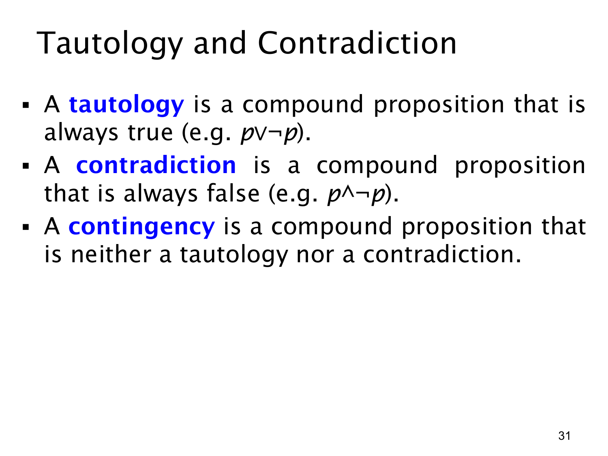

L1.1 · 第 31 页讲解原文
查看这一页课件

永真式、矛盾式与偶然式
这里按一个复合命题在所有可能的真值赋值下会得到什么结果来分类，而不是只看现实中某一次情况。
永真式（tautology）无论输入命题怎样取真或假，结果都是真。例子 p∨¬p：若 p 真，左边为真；若 p 假，¬p 为真。因此总有一边成立。
矛盾式（contradiction）无论怎样赋值，结果都是假。例子 p∧¬p：p 与它的否定不可能同时为真，所以合取永远不成立。
| p | ¬p | p∨¬p | p∧¬p |
|---|---|---|---|
| T | F | T | F |
| F | T | T | F |
偶然式（contingency）既不是永真式，也不是矛盾式：它在某些赋值下真、在另一些赋值下假。例如单独的 p，或上一页的 p→q，都需要看具体真值才知道结果。检查时可以列真值表：结果列全是 T 为永真式，全是 F 为矛盾式，既有 T 又有 F 则为偶然式。